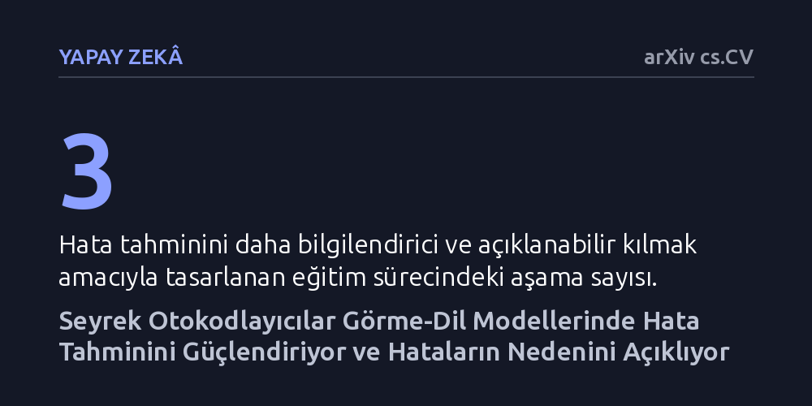

YAPAY-ZEKA · arXiv cs.CV · 2026-09-08
Görme-dil modellerinin ne zaman hata yapacağını anlamak için seyrek otokodlayıcılara dayalı üç aşamalı bir tahmin yöntemi geliştirildi. Yöntem mevcut yaklaşımlardan daha yüksek başarı gösterirken, hataların sınıfa özgü kavramlardan biçimsel ve belirsiz kavramlara kaymasıyla oluştuğunu ortaya koydu.
Yapay zekanın ne zaman yanılacağını sadece olasılık puanlarıyla tahmin etmek yerine, modelin hangi kavramları birbirine karıştırdığını doğrudan görerek anlamanın mümkün olduğunu gösteriyor.

Son yıllarda yaygınlık kazanan görme-dil modelleri (VLM), görseller ile metinleri aynı kavramsal düzlemde buluşturarak çok modlu görevlerde etkili sonuçlar veriyor. Örneğin CLIP gibi yapay zeka sistemleri bir görseli saniyeler içinde analiz edip içindeki nesneleri, ortamı veya durumları metinsel olarak tanımlayabiliyor. Ne var ki bu modeller tıp, otonom sürüş veya güvenlik gibi hata payının insan hayatını doğrudan etkilediği kritik alanlarda kullanılmaya başlandığında, sistemin ne zaman doğru ne zaman yanlış karar vereceğini önceden kestirmek hayati bir güvenlik ihtiyacına dönüşüyor.
Mevcut yaklaşımlarda modelin başarısızlıklarını tahmin etmek için çoğunlukla olasılık güven puanları ya da ikincil sınıflandırıcı modeller kullanılıyor. Bu yöntemler modelin hata yapıp yapmayacağını istatistiksel olarak tahmin edebilse de, modelin 'neden' yanılmak üzere olduğuna dair neredeyse hiçbir açıklama sunamıyor. Karar anında yapay zekanın iç dinamiklerini göremeyen uzmanlar, yalnızca bir güven skoruna dayanarak müdahale etmek zorunda kalıyor; bu da kara kutu problemini çözümsüz bırakıyor.
Araştırmacılar, görme-dil modellerinin gizli iç katmanlarındaki karmaşık bilgi ağını çözmek amacıyla 'FailSAE' adını verdikleri bir çerçeve geliştirdi. Yöntemin merkezinde, karmaşık sinir ağı temsillerini insanların anlayabileceği tekil kavramlara ayrıştırabilen seyrek otokodlayıcılar (SAE) yer alıyor. Normalde bir modelin içindeki vektörler binlerce farklı özelliğin birbirine girdiği soyut sayılardan oluşurken, seyrek otokodlayıcılar bu temsilleri ayrıştırarak yalnızca belirli bir kavrama (örneğin belirli bir nesne türü, doku veya biçim) tepki veren yönler elde ediyor.
Araştırmacılar hata tahminini, bu seyrek gizli aktivasyonlar üzerinde çalışan bir sınıflandırma görevi olarak kurguladı. Bununla da yetinmeyip üç aşamalı bir hata duyarlı eğitim süreci tasarladılar. Bu eğitim süreci, otokodlayıcının öğrendiği kavramsal yönlerin hem insan için yorumlanabilir kalmasını hem de yaklaşan bir hatayı önceden haber verme konusunda daha bilgilendirici olmasını sağladı. Böylece modelin hata yapma olasılığı doğrudan kavramsal bileşenler üzerinden ölçülebilir hale getirildi.
Deneysel değerlendirmeler, FailSAE yönteminin temel kıyas modellerini geride bırakarak daha yüksek bir hata tahmin başarısı gösterdiğini ortaya koydu. Ancak çalışmanın en dikkat çekici bulgusu, modelin hata yaparken yaşadığı kavramsal dönüşümün ilk kez bu kadar somut biçimde haritalandırılması oldu. Hata duyarlı eğitim, seyrek otokodlayıcının doğrudan belirli sınıflara ve nesnelere özgü kavramları çok daha net yakalamasını sağladı.
Yapılan kavram düzeyi analizler, modelin yanıldığı anlarda iç temsilinde belirgin bir 'kavram kayması' yaşandığını açığa çıkardı. Model doğru karar verirken nesnenin kendisine ve sınıfına özgü belirleyici kavramlara odaklanırken; hata yaptığı durumlarda temsiller sınıfa özgü kavramlardan uzaklaşıp daha muğlak, genel veya görsel biçemle (stil, doku, arka plan) ilişkili kavramlara kayıyordu. Başka bir deyişle yapay zeka, nesnenin özünü kaçırıp biçimsel benzerliklerin veya belirsiz desenlerin etkisinde kaldığında hata yapıyordu.
Bu çalışmanın ortaya koyduğu metodoloji, yapay zekayı yalnızca 'uyaran' bir sistem olmaktan çıkarıp 'açıklayan ve düzelten' bir yapıya dönüştürme potansiyeli taşıyor. Seyrek otokodlayıcılar sayesinde bir modelin neden şaşırdığı anlaşılabildiği için, sistem bir görüntüye yanlış etiket vermek üzereyken operatöre 'nesne kavramı zayıfladı, stil kavramı öne çıktı' şeklinde somut bir gerekçe sunulabiliyor. Bu da kritik süreçlerde insan müdahalesinin körü körüne değil, bilinçli biçimde gerçekleşmesini mümkün kılıyor.
Araştırmacılar ayrıca öğrenilen bu kavram yönlerinin çalışma zamanında hataların onarılmasında nasıl kullanılabileceğini de inceledi. Modelin yanlış yöne kaydığı kavramlar tespit edildiğinde, iç temsiller üzerinde yapılacak hedefli müdahalelerle yapay zekanın yeniden doğru kavrama yönlendirilmesi araştırıldı. Henüz bir önbaskı aşamasında olan çalışma, yapay zekanın iç işleyişini şeffaflaştırmanın sadece teorik bir merak değil, aynı zamanda model güvenliğini doğrudan artıran pratik bir mühendislik aracı olduğunu gösteriyor.